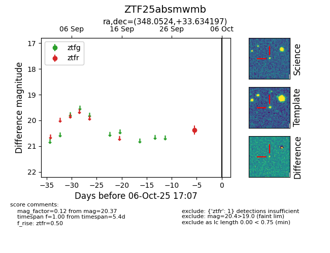

FINK: ZTF25absmwmb
Lasair: ZTF25absmwmb
ALeRCE: ZTF25absmwmb
ZTF25absmwmb (ztf,fink)
equatorial (ra, dec) = (348.0524,+33.63420)
galactic (l, b) = (100.2923,-24.83816)

last ztfr=20.37
1 ztfr detections